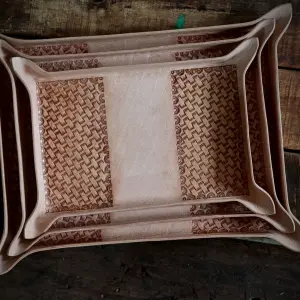
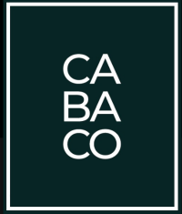

Panarilla Tray Holder
Terbuat dari kulit Buffalo Vegetable Tanned berkualitas tinggi. Didesain dengan teknik molding khusus untuk mempertahankan bentuk yang kokoh dan elegan.

Sejak 2016, CABACO mendedikasikan waktu untuk menciptakan mahakarya kerajinan kulit (Home Decor, Fashion, Aksesoris) dengan material terbaik. Dibuat secara handmade oleh pengrajin handal menggunakan teknik hand stitch dan ukir presisi tinggi.


Terbuat dari kulit Buffalo Vegetable Tanned berkualitas tinggi. Didesain dengan teknik molding khusus untuk mempertahankan bentuk yang kokoh dan elegan.

Memiliki ukiran artistik di kedua sisi tray. Tersedia dalam 1 set (3 ukuran): Large (37x29x3), Medium (33x25x3), dan Small (29x21x3).
Terima pesanan Custom B2B & Pengiriman Internasional.